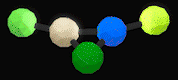
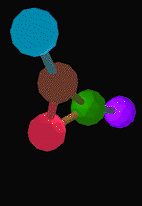
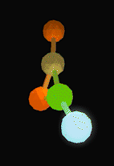
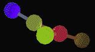
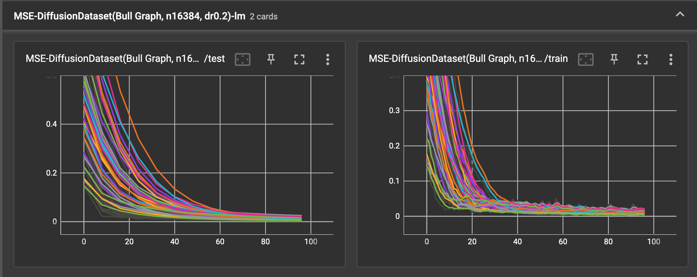
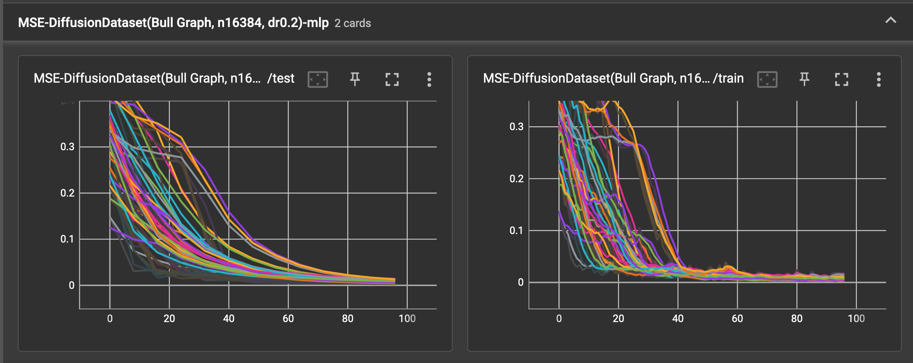
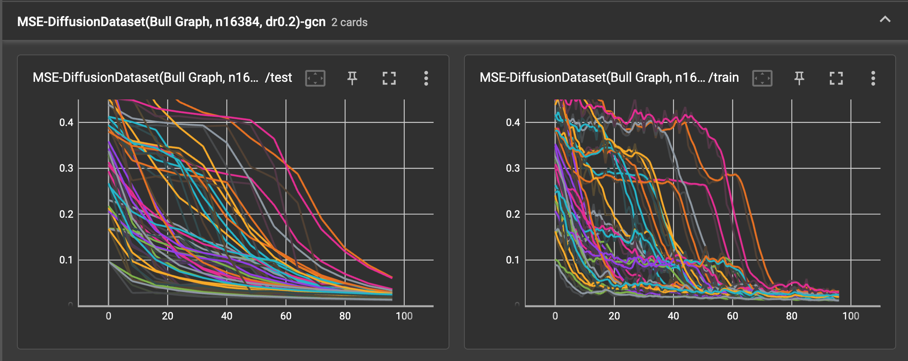

Everything's a graph
My name's Eric. Welcome to my blog.
October 29, 2022
Look Mom, I'm on the internet.
Introduction
Shchur et al. 2019
arXiv:1811.05868
provide a clear-eyed set of pitfalls to avoid when developing with graph neural nets. Three admonitions stand out:
- Sometimes simpler, smaller nets do better.
- Remember to replicate and cross validate.
- Tune hyperparameters fairly.
In this post, I set a baseline using two of Shchur's three suggested models (MLP, GCN) to fit color diffusion on a
5-node, 5-edge graph. Along with a linear model, these three classes of models form a gradient of relational
inductive bias.
- The linear model's form contains no representation of the graph's structure; it is not equipped to fit
nonlinearities.
- The fully connected layer is also unaware of the graph structure, but it can fit piecewise linear
functions.
- The graph convolutional layer knows the graph structure and comes equipped with relu activation functions.
All three should fit well, as their forms match the generative process: the color diffusion is linear and Markov. After
training on eight 87.5% splits of the data, replicating 4 times each split, the LM and MLP show to outperform the GCN.
I've not tuned the hyperparameters, though, so YMMV.
Models
The neural nets each have a single layer and feed forward into a relu activation function.
The graph convolution is from Kipf and Welling 2016 arXiv:1609.02907.
Neither input nor output channel embeddings are required. The RGBA values are all within [0,1]. None of the models
include an extra bias term because the alpha channel is fixed at 1 everywhere.
Code
The Python code for each model is reproduced below:
class LM(torch.nn.Module):
""" y = mx + b, simple as that """
def __init__(self, channels=4, bias=True):
super().__init__()
self.lin0 = Linear(channels, channels, bias=bias)
def forward(self, data):
x = data.x
x = self.lin0(x)
return x
class MLP(torch.nn.Module):
""" multi-layer perceptron with a single layer """
def __init__(self, channels=4, bias=True):
super().__init__()
self.lin0 = Linear(channels, channels, bias=bias)
def forward(self, data):
x = data.x
x = self.lin0(x)
x = F.relu(x)
return x
class GCN(torch.nn.Module):
""" Kipf and Welling 2017 eqn (9) """
def __init__(self, channels=4, bias=True):
super().__init__()
self.conv0 = GCNConv(channels, channels, bias=bias)
def forward(self, data):
x, edge_index = data.x, data.edge_index
x = self.conv0(x, edge_index)
x = F.relu(x)
return x
The data objects are instances of torch_geometric.Data and F is torch.nn.functional.
Data
For a graph G with degree matrix D and adjacency matrix A, a linear diffusion process here is defined recursively as
Xt+1 = (1-a)Xt + aLXt. The scalar a is the diffusion rate and L = A - D is the graph Laplacian. Each Xt is a 4-channel
2-tensor holding the RGBA values for each node's color - the shape is (5, 4). The and the three channels are initialized
independently as samples from U[0,1]. After 8 steps, the colors are re-initialized.
This is a visualization of the dataset:

There are 16,384 observations (x=Xt, y=Xt+1). The average color change ∆=sum(|x-y|)/len(G) between steps
are plotted below:

Raw observations in this dataset are heavily skewed towards smaller changes - in the second half of the simulation,
most colors are nearly identical. There's a bump at 0.07 due to periodic re-initialization. After I've removed these
re-initialization steps in pre-processing, the models train on the remaining 14,750-or-so ∆s.
Training
The following gifs show the graph convolution model's RBG predictions over the course of training. The alpha channel is
fixed at 1.
gcn before any training
The model parameters are initialized near zero - the following are model predictions from the GCN before training:

gcn after 24 of 96 epochs

gcn after 96 epochs

Results
The spaghetti plots below show the train and test loss falling as the models each learn the dataset, without batch
normalization. As 8 cross validation splits are used and each run is replicated 4 times, the plot has 32 noodles per
training card. The test error is calculated over the test set 12 times over the course of 96 training epochs.
After some minimal tinkering, the Adam optimizer with lr=0.02 and wd=5e-4 seem to work well enough.
linear model

multi-layer perceptron

graph convolutional layer

Without an examination of the replication and train/test split effects, for 87.5% of the training runs, the mean squared
error fell to within
- [0.006, 0.02] using the linear model
- [0.004, 0.18] using the multi-layer perceptron
- [0.017, 0.03] using the graph convolutional layer.
In this baseline case, the best relational inductive bias is the naive one.
See also
Appendix
The full set of experimental parameters are captured here:
dataset_name = "diffusion"
graph_name = "bull"
python = "3.10.6 (main, Sep 14 2022, 08:30:16) [Clang 10.0.1 (clang-1001.0.46.4)]"
platform = "darwin"
implementation = "namespace(name='cpython', cache_tag='cpython-310', version=sys.version_info(major=3, minor=10, micro=6, releaselevel='final', serial=0), hexversion=50988784, _multiarch='darwin')"
[config]
uid = "e4dd0505-758d-492a-89b3-94c08f21344e"
updated = 2022-10-28T17:02:00.154517
root = "data/diffusion"
name = "small graph diffusion baseline"
[[config.modules]]
kind = "gcn"
[[config.modules.kwargs]]
bias = false
[[config.modules]]
kind = "lm"
[[config.modules.kwargs]]
bias = false
[[config.modules]]
kind = "mlp"
[[config.modules.kwargs]]
bias = false
[[config.datasets]]
kind = "diffusion"
graph = "bull"
nobs = 16384
force = false
[[config.datasets.kwargs]]
nstep = 8
diffusion_rate = 0.2
force = false
[config.train]
epochs = 96
checkpoints = 4
n_test_eval = 12
nsplits = 8
nreps = 4
[config.train.optimizer]
kind = "adam"
[config.train.loader]
batch_size = 64
shuffle = false
[config.train.optimizer.kwargs]
lr = 0.02
weight_decay = 0.0005
Earlier posts